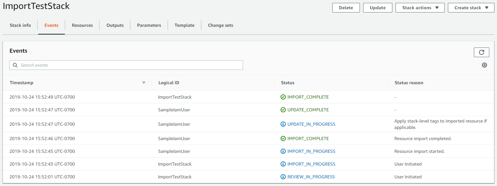

Le traduzioni sono generate tramite traduzione automatica. In caso di conflitto tra il contenuto di una traduzione e la versione originale in Inglese, quest'ultima prevarrà.
Importazione di risorse esistenti in uno stack
Durante questa operazione di importazione, è necessario fornire quanto segue.
-
Un modello che descrive l'intero stack, incluse le risorse che fanno già parte dello stack e le risorse da importare. Ogni risorsa da importare deve avere una Attributo DeletionPolicy nel modello.
-
Un identificatore univoco per ogni risorsa di destinazione. Visitare la console di servizio appropriata per ottenere identificatori univoci.
In questa spiegazione passo per passo, forniamo il seguente modello di esempio, chiamato TemplateToImport.json. ServiceTable è attualmente parte dello stack ed GamesTable è il target dell'importazione.
{ "AWSTemplateFormatVersion": "2010-09-09", "Description": "Import test", "Resources": { "ServiceTable": { "Type": "AWS::DynamoDB::Table", "Properties": { "TableName": "Service", "AttributeDefinitions": [ { "AttributeName": "key", "AttributeType": "S" } ], "KeySchema": [ { "AttributeName": "key", "KeyType": "HASH" } ], "ProvisionedThroughput": { "ReadCapacityUnits": 5, "WriteCapacityUnits": 1 } } }, "GamesTable": { "Type": "AWS::DynamoDB::Table", "DeletionPolicy": "Retain", "Properties": { "TableName": "Games", "AttributeDefinitions": [ { "AttributeName": "key", "AttributeType": "S" } ], "KeySchema": [ { "AttributeName": "key", "KeyType": "HASH" } ], "ProvisionedThroughput": { "ReadCapacityUnits": 5, "WriteCapacityUnits": 1 } } } } }
Importazione di una risorsa esistente in uno stack utilizzando l'AWS Management Console
Nota
La console AWS CloudFormation non supporta l'uso della funzione intrinseca Fn::Transform durante l'importazione di risorse. È possibile utilizzare l'AWS Command Line Interface per importare le risorse che utilizzano la funzione intrinseca Fn::Transform.
Accedere alla AWS Management Console e aprire la console di AWS CloudFormation all'indirizzo https://console.aws.amazon.com/cloudformation
. -
Nella pagina Stacks (Stack), scegliere lo stack in cui importare le risorse.
-
Scegliere Stack actions (Operazioni stack), quindi scegliere Import resources into stack (Importa risorse nello stack).

-
Rivedere la pagina Import overview (Panoramica importazione), quindi scegliere Next (Successivo).
-
Nella pagina Specify model (Specifica modello), fornire il modello aggiornato utilizzando uno dei metodi descritti di seguito, quindi scegliere Next (Successivo).
-
Scegliere Amazon S3 URL (URL Amazon S3), quindi specificare l'URL per il tuo modello nella casella di testo.
-
Scegliere Upload a template file (Carica un file modello), quindi cercare il modello.
-
-
Nella pagina Identify resources (Identifica risorse), identifica ogni risorsa di destinazione.
-
In Identifier property (Proprietà identificatore), scegliere il tipo di identificatore di risorsa. Ad esempio, la risorsa
AWS::DynamoDB::Tablepuò essere identificata utilizzando la proprietàTableName. -
In Identifier value (Valore identificatore), digitare il valore effettivo della proprietà. Ad esempio, il
TableNameper la risorsaGamesTablenel modello di esempio èGames
-
Seleziona Avanti.
-
-
Nella pagina Specify stack details (Specifica dettagli stack), aggiornare i parametri, quindi scegliere Next (Successivo). Questo crea automaticamente un set di modifiche.
Nota
L'operazione di importazione ha esito negativo se si modificano i parametri esistenti che iniziano un'operazione di creazione, aggiornamento o eliminazione.
-
Nella pagina Review
stack-name(Rivedi nome stack), rivedi le risorse da importare, quindi scegli Import resources (Importa risorse). In questo modo si esegue automaticamente il set di modifiche creato nell'ultimo passaggio. Tutti i tag a livello di stack vengono applicati alle risorse importate in questo momento. Per ulteriori informazioni, consulta Impostazione di opzioni di stack AWS CloudFormation.Viene visualizzata la pagina Events (Eventi) per lo stack.
 -
(Facoltativo) Eseguire il rilevamento della deviazione nello stack per assicurarsi che il modello e la configurazione effettiva delle risorse importate corrispondano. Per ulteriori informazioni sul rilevamento della deriva, vedere. Rileva la deriva su un'intera CloudFormation pila
-
(Facoltativo) Se le risorse importate non corrispondono alle configurazioni dei modelli previste, correggi le configurazioni dei modelli o aggiorna direttamente le risorse. Per ulteriori informazioni sull'importazione di risorse alla deriva, vedere. Risoluzione della deviazione con un'operazione di importazione
Importazione di una risorsa esistente in uno stack utilizzando l'AWS CLI
-
Facoltativamente, eseguire
GetTemplateSummaryper scoprire quali proprietà identificano ogni tipo di risorsa nel modello. Ad esempio, la risorsaAWS::DynamoDB::Tablepuò essere identificata utilizzando la proprietàTableName. Per la risorsaGamesTablenel modello di esempio, il valore diTableNameèGames.>aws cloudformation get-template-summary --template-url https://DOC-EXAMPLE-BUCKET.s3.us-west-2.amazonaws.com/TemplateToImport.json -
Comporre un elenco di risorse da importare e relativi identificatori univoci nel formato seguente.
[{\"ResourceType\":\"AWS::DynamoDB::Table\",\"LogicalResourceId\":\"GamesTable\",\"ResourceIdentifier\":{\"TableName\":\"Games\"}}] -
Crea un set di modifiche di tipo
IMPORTcon i seguenti parametri.--resources-to-importnon supporta YAML in linea.>aws cloudformation create-change-set --stack-nameTargetStack--change-set-nameImportChangeSet--change-set-typeIMPORT--resources-to-import "[{\"ResourceType\":\"AWS::DynamoDB::Table\",\"LogicalResourceId\":\"GamesTable\",\"ResourceIdentifier\":{\"TableName\":\"Games\"}}]" --template-url https://DOC-EXAMPLE-BUCKET.s3.us-west-2.amazonaws.com/TemplateToImport.jsonAWS CLI supporta anche i file di testo come input per il parametro
resources-to-import, come mostrato nell'esempio seguente.--resources-to-import:file://ResourcesToImport.txtIn questa procedura dettagliata,
file://ResourcesToImport.txt contiene quanto segue.[ { "ResourceType":"AWS::DynamoDB::Table", "LogicalResourceId":"GamesTable", "ResourceIdentifier": { "TableName":"Games" } } ] -
Esaminare il set di modifiche per assicurarsi che vengano importate le risorse corrette.
>aws cloudformation describe-change-set --change-set-nameImportChangeSet--stack-nameTargetStack -
Eseguire il set di modifiche per importare le risorse. Tutti i tag a livello di stack vengono applicati alle risorse importate in questo momento. Per ulteriori informazioni, consulta Impostazione di opzioni di stack AWS CloudFormation.. Al completamento dell'operazione
(IMPORT_COMPLETE), le risorse vengono importate correttamente.>aws cloudformation execute-change-set --change-set-nameImportChangeSet--stack-nameTargetStack -
(Facoltativo) Eseguire il rilevamento della deviazione sullo stack
IMPORT_COMPLETEper assicurarsi che il modello e la configurazione effettiva delle risorse importate corrispondano. Per ulteriori informazioni sul rilevamento della deriva, vedere. Rileva la deriva su un'intera CloudFormation pila>aws cloudformation detect-stack-drift --stack-nameTargetStack{ "Stack-Drift-Detection-Id" : "624af370-311a-11e8-b6b7-500cexample" }>aws cloudformation describe-stack-drift-detection-status --stack-drift-detection-id624af370-311a-11e8-b6b7-500cexample>aws cloudformation describe-stack-resource-drifts --stack-nameTargetStack -
(Facoltativo) Se le risorse importate non corrispondono alle configurazioni dei modelli previste, correggi le configurazioni dei modelli o aggiorna direttamente le risorse. Per ulteriori informazioni sull'importazione di risorse alla deriva, vedere. Risoluzione della deviazione con un'operazione di importazione